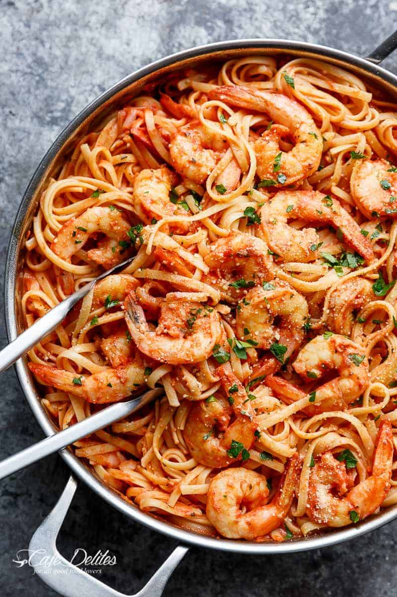

Tomato Shrimp Spaghetti

Description
A wonderful recipe for tomato shrimp spaghetti, which is easy to prepare with simple
ingredients. Never fails to satisfy.
Ingredients
- 20 large shrimp, deveined with shell and head left on
- 4 tomatoes, or more to taste
- 1 bunch flat-leaf parsley, divided
- 1/4 cup extra-virgin olive oil
- 1 large onion, chopped
- 1 red bell pepper, chopped
- 1 fresh red chili pepper, finely chopped
- 4 large cloves garlic, sliced, or more to taste
- 1/2 cup water
- 2 tablespoons tomato paste
- 1 tablespoon dried oregano
- salt and ground black pepper to taste
- 1 teaspoon paprika
- 1 5/8 pounds spaghetti (Optional)